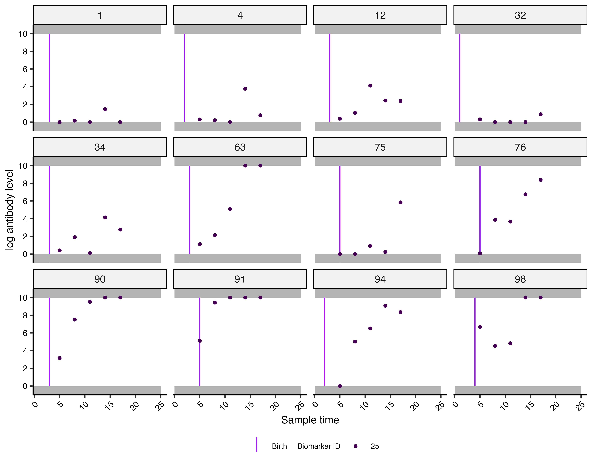
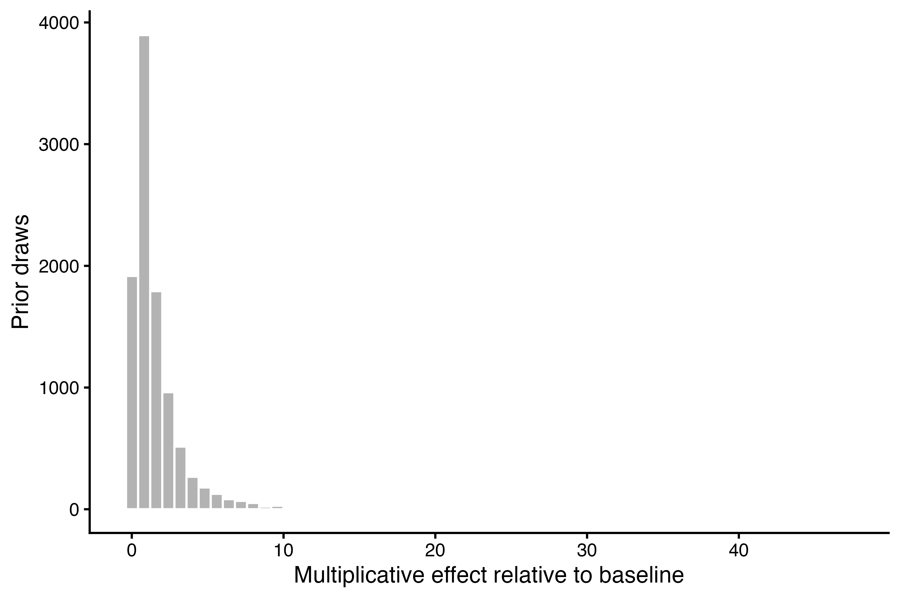
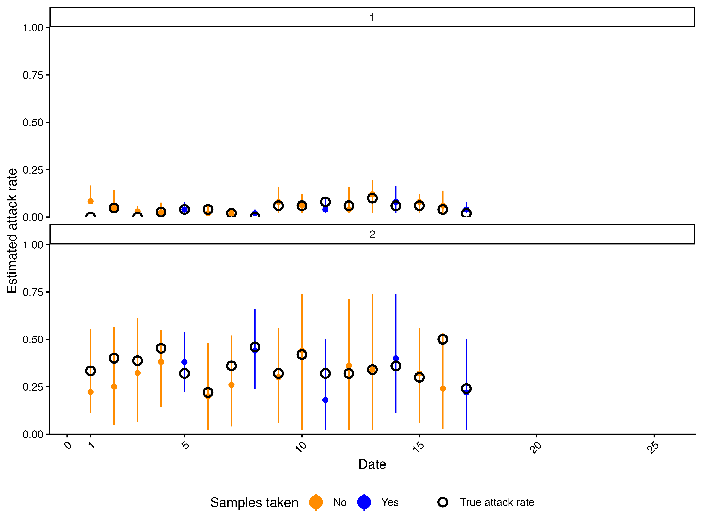
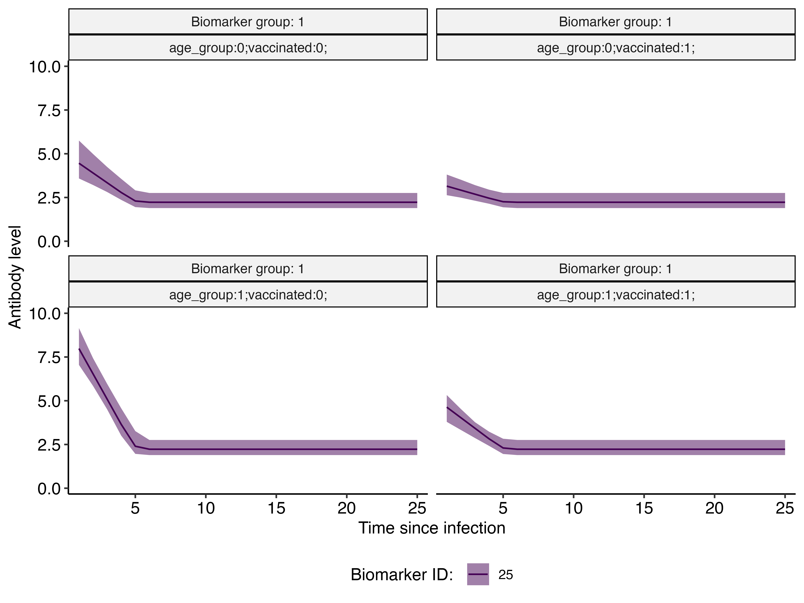
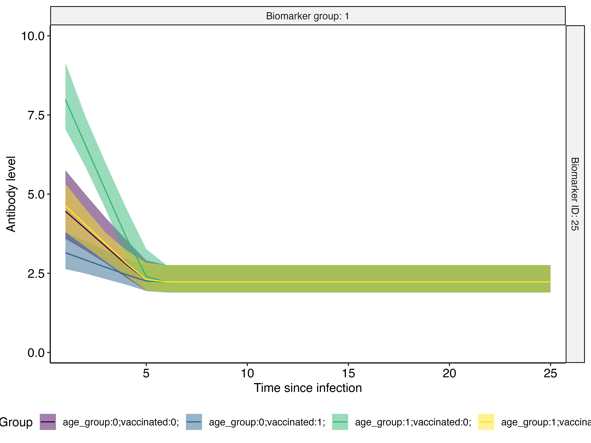
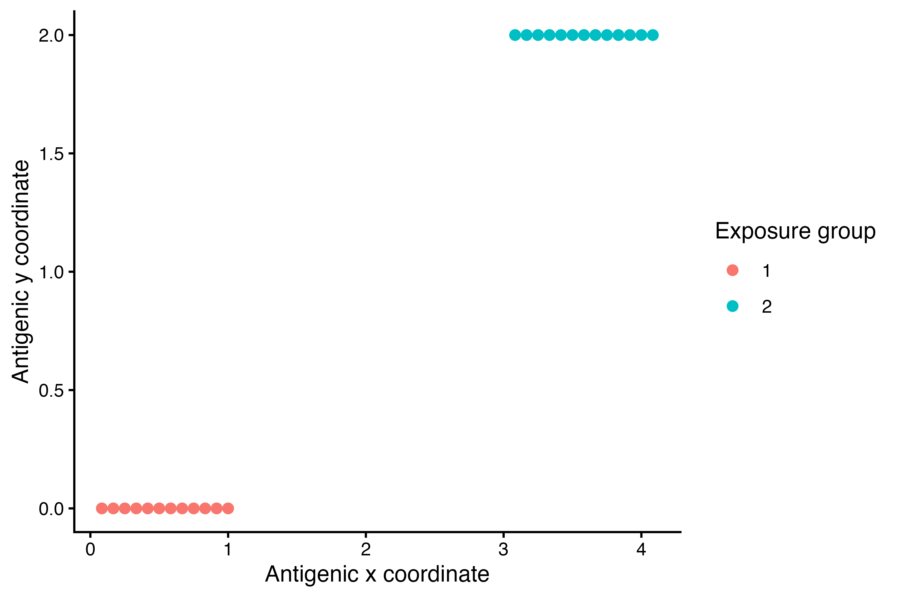
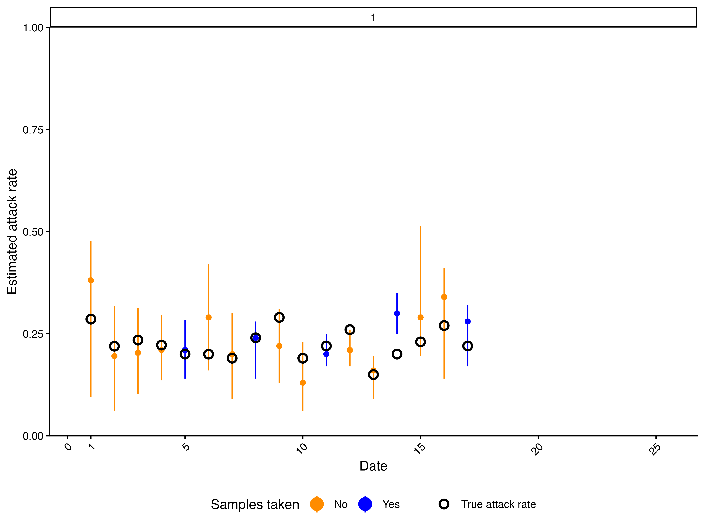
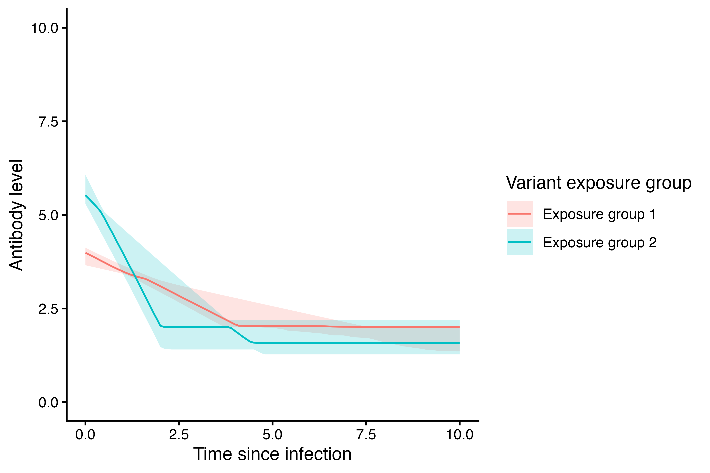

serosolver
vignettes/demographics_covariates.Rmd
demographics_covariates.RmdDemographic and other covariate information is useful when infection
rates or antibody kinetics are expected to differ between groups.
serosolver treats these as separate choices.
population_group defines groups with different
infection-history priors and is used when summarising attack rates. The
stratification column in par_tab defines
demographic effects on antibody-model parameters such as antibody
boosting or waning rates.
You can mix and match different covariates to affect different
parameters. For example, location could define different infection rates
by location, while vaccination status and age group could affect
antibody kinetics. serosolver has a flexible interface for
specifying these covariates. For example, fixed covariates can be
included as variables in antibody_data or in a separate
one-row-per-individual demographics table. Users can also
allow covariate membership to vary over time using the demographics
table with one row for each individual and possible exposure time
combination, which is a suitable approach for covariates which change
with time, such as treatment group or age.
This vignette uses a synthetic longitudinal dataset with continuous antibody measurements, five samples per individual, 25 possible exposure times, two infection-rate groups, fixed vaccination and location covariates, and a time-varying age group. Variant-specific parameters are introduced in a separate major section below; other extensions are covered in the advanced-features vignette.
When known stratification effects are needed for a
simulation-recovery check, they can be supplied to
simulate_data() in a coefficient_values data
frame. Each row gives the base parameter, stratification variable,
non-baseline level, biomarker group, and coefficient value. The same
base par_tab is then used for fitting;
serosolver() creates the coefficient rows from its
stratification entries.
set.seed(123)
n_indiv <- 100
possible_exposure_times <- 1:25
sample_times <- c(5, 8, 11, 14, 17)
## Covariate factors are zero-based; population_group IDs are one-based.
## Create a version of the demographics data frame which has fixed covariate membership
fixed_demographics <- data.frame(
individual = seq_len(n_indiv),
birth = sample(1:5, n_indiv, replace = TRUE),
vaccinated = rep(0:1, length.out = n_indiv),
location = rep(0:1, each = n_indiv / 2)
) %>%
mutate(population_group = location + 1L)
## Create a version of the demographics data frame with time-varying covariate membership
timevarying_demographics <- tidyr::expand_grid(
fixed_demographics, time = possible_exposure_times
) %>%
arrange(individual, time) %>%
mutate(age_group = as.integer(time - birth >= 5))
## Use one stratified table both to simulate and to fit the data.
data(example_par_tab)
par_tab <- example_par_tab
par_tab$stratification <- NA_character_
## Simplify the kinetics model
par_tab[par_tab$names %in% c("cr_long", "cr_short", "wane_long"), "fixed"] <- 1
par_tab[par_tab$names %in% c("cr_long", "cr_short", "wane_long"), "values"] <- 0
par_tab[par_tab$names == "min_measurement", c("values", "lower_bound", "upper_bound")] <- 0
par_tab[par_tab$names == "max_measurement", c("values", "lower_bound", "upper_bound")] <- 10
## Stratify attack rates by population group
par_tab[par_tab$names %in% c(
"infection_model_prior_shape1", "infection_model_prior_shape2"
), "stratification"] <- "population_group"
## Stratify short-term boosting magnitude by age group and vaccination status
par_tab[par_tab$names == "boost_short", "stratification"] <- "age_group, vaccinated"
## Set known, well-separated coefficient values for the simulation. The
## coefficient table uses the same parameter and biomarker-group labels as
## par_tab, but does not need the generated coefficient names.
coefficient_values <- data.frame(
parameter = c("boost_short", "boost_short"),
stratification = c("age_group", "vaccinated"),
stratification_level = c(1, 1),
biomarker_group = c(1, 1),
value = c(1, -1)
)
sim_attack_rates <- simulate_attack_rates(
possible_exposure_times, mean_par = c(0.05, 0.35),
sd_par = c(0.05, 0.05), n_groups = 2
)
## Continuous observations use data_type = "continuous".
simulated_data <- simulate_data(
par_tab = par_tab, n_indiv = n_indiv,
possible_exposure_times = possible_exposure_times,
measured_biomarker_ids = 25, sampling_times = sample_times,
nsamps = length(sample_times), demographics = timevarying_demographics,
attack_rates = sim_attack_rates, data_type = "continuous",
coefficient_values = coefficient_values, verbose = FALSE
)
antibody_data <- check_data(simulated_data$antibody_data)
plot_antibody_data(
antibody_data, possible_exposure_times = possible_exposure_times,
n_indivs = 12, study_design = "longitudinal"
) +
facet_wrap(~ individual, ncol = 4) +
theme(axis.text.x = element_text(angle = 45, hjust = 1))
Fixed demographic values can be included directly in
antibody_data when they are constant for each
individual.
fixed_covariates <- fixed_demographics %>%
select(individual, vaccinated, location, population_group)
antibody_data_with_fixed_covariates <- antibody_data %>%
left_join(fixed_covariates, by = "individual")
head(check_data(antibody_data_with_fixed_covariates))
#> individual sample_time birth repeat_number biomarker_id biomarker_group
#> 1 1 5 3 1 25 1
#> 2 1 8 3 1 25 1
#> 3 1 11 3 1 25 1
#> 4 1 14 3 1 25 1
#> 5 1 17 3 1 25 1
#> 6 2 5 3 1 25 1
#> measurement vaccinated location population_group
#> 1 0.000 0 0 1
#> 2 0.165 0 0 1
#> 3 0.000 0 0 1
#> 4 1.453 0 0 1
#> 5 0.000 0 0 1
#> 6 0.373 1 0 1Alternatively, use a separate demographics table to pass any covariate information separately.
fixed_demographics_for_model <- fixed_demographics %>%
select(individual, birth, vaccinated, location, population_group)
head(check_demographics(fixed_demographics_for_model))
#> individual birth vaccinated location population_group
#> 1 1 3 0 0 1
#> 2 2 3 1 0 1
#> 3 3 2 0 0 1
#> 4 4 2 1 0 1
#> 5 5 3 0 0 1
#> 6 6 5 1 0 1A time-varying table has individual, birth,
and time columns at a minimum, together with the covariates
that change over time. Here, age_group is calculated from
birth and model time, as individuals change age groups as time
progresses. In this version, every individual must have a row for every
possible exposure time.
head(check_demographics(timevarying_demographics))
#> # A tibble: 6 × 7
#> individual birth vaccinated location population_group time age_group
#> <int> <int> <int> <int> <int> <int> <int>
#> 1 1 3 0 0 1 1 0
#> 2 1 3 0 0 1 2 0
#> 3 1 3 0 0 1 3 0
#> 4 1 3 0 0 1 4 0
#> 5 1 3 0 0 1 5 0
#> 6 1 3 0 0 1 6 0par_tab
par_tab is the model control table. In this example, the
infection-history prior parameters are stratified by the
population_group ID, while boost_short has
additive antibody-kinetics effects for age_group and
vaccinated.
check_par_tab(
par_tab, mcmc = TRUE,
possible_exposure_times = possible_exposure_times, version = 2
)
#> names values fixed lower_bound upper_bound
#> 1 boost_long 2.00 0 0 8
#> 2 boost_short 2.00 0 0 8
#> 3 boost_delay 0.00 1 0 10
#> 4 antigenic_seniority 0.00 1 0 1
#> 5 wane_long 0.00 1 0 1
#> 6 wane_short 0.25 0 0 1
#> 7 wane_maternal 0.00 1 0 8
#> 8 cr_long 0.00 1 0 1
#> 9 cr_short 0.00 1 0 1
#> 10 min_measurement 0.00 1 0 0
#> 11 max_measurement 10.00 1 10 10
#> 12 obs_sd 1.00 0 0 25
#> 13 fp_rate 0.00 1 0 1
#> 14 infection_model_prior_shape1 1.00 1 0 1000
#> 15 infection_model_prior_shape2 10.00 1 0 1000
#> 16 antibody_dependent_boosting 0.00 1 0 1
#> 17 exponential_waning 0.00 1 0 1
#> lower_start upper_start par_type stratification biomarker_group steps
#> 1 1.000 3e+00 1 <NA> 1 0.1
#> 2 2.000 3e+00 1 age_group, vaccinated 1 0.1
#> 3 0.000 1e+01 1 <NA> 1 0.1
#> 4 0.010 1e-01 1 <NA> 1 0.1
#> 5 0.001 2e-02 1 <NA> 1 0.1
#> 6 0.010 1e-01 1 <NA> 1 0.1
#> 7 0.100 5e-01 1 <NA> 1 0.1
#> 8 0.100 2e-01 1 <NA> 1 0.1
#> 9 0.010 1e-01 1 <NA> 1 0.1
#> 10 0.000 0e+00 1 <NA> 1 0.1
#> 11 8.000 8e+00 1 <NA> 1 0.1
#> 12 0.500 2e+00 1 <NA> 1 0.1
#> 13 0.000 1e+00 1 <NA> 1 0.1
#> 14 0.000 1e+03 2 population_group 1 0.1
#> 15 0.000 1e+03 2 population_group 1 0.1
#> 16 0.000 1e+00 1 <NA> 1 0.1
#> 17 0.000 1e+00 0 <NA> NA 0.1
par_tab %>%
filter(!is.na(stratification)) %>%
select(names, stratification)
#> names stratification
#> 1 boost_short age_group, vaccinated
#> 2 infection_model_prior_shape1 population_group
#> 3 infection_model_prior_shape2 population_group
simulated_data$par_tab %>%
filter(par_type == 4) %>%
select(names, values, par_type, biomarker_group)
#> names values par_type biomarker_group
#> 1 boost_short_biomarker_1_coef_age_group_1 1 4 1
#> 2 boost_short_biomarker_1_coef_vaccinated_1 -1 4 1
fixed_demographics %>%
select(location, population_group) %>%
distinct() %>%
arrange(location)
#> location population_group
#> 1 0 1
#> 2 1 2Covariate levels used for parameter stratification are zero-based,
with level 0 as the baseline. population_group is
different: it is one-based. Here, location 0 maps to population group 1
and location 1 maps to population group 2.
When a parameter is stratified, the value in its original
par_tab row is the value for the level-0 baseline group.
serosolver adds a par_type = 4 coefficient row
for each additional level. For example, a coefficient for
boost_short and vaccinated = 1 describes the
change from the vaccinated = 0 value; it is not a second
independent value for boost_short.
The coefficient is combined with the baseline value on a scale that
keeps the parameter within its allowed range. If the parameter is
unbounded, the value for group g is
where x_0 is the baseline value and beta_g
is the coefficient. For a positive parameter such as
boost_short, the coefficient is added on the log scale:
For a parameter bounded between 0 and 1, it is added on the logit scale:
When more than one covariate is listed in
stratification, the corresponding coefficients are added
together on the relevant transformed scale. Every coefficient row added
in this way must therefore be included in the prior function used by the
Bayesian model.
For example, with age group a and vaccination status
v, the combined effect can be written as
where h is the identity, log, or logit transformation
described above. The natural-scale value is obtained by applying the
inverse transformation after the coefficients have been added.
Baseline antibody parameters describe the group coded 0 for each
stratifying covariate. A coefficient describes the change relative to
that baseline. population_group selects a group-specific
infection-history prior; it is not an antibody-kinetics coefficient.
Sparse groups can produce weakly identified coefficients, so the prior
may contribute substantial uncertainty to the implied group
differences.
Every coefficient row generated from
par_tab$stratification is an estimated parameter and needs
a prior. The following function identifies the added coefficient rows by
their names and applies a weak standard normal prior to them. It is
passed to both the prior-predictive and fitted serosolver()
calls below.
prior_func <- function(par_tab) {
par_names <- par_tab$names
coef_pars <- which(grepl("coef", par_names))
function(pars) {
names(pars) <- par_names
## Place normal prior on the stratification coefficients
prior_p <- sum(dnorm(pars[coef_pars], 0, 1, log = TRUE))
prior_p <- prior_p + dlnorm(pars["boost_long"], log(2), 0.5, log = TRUE)
prior_p <- prior_p + dlnorm(pars["boost_short"], log(2), 0.5, log = TRUE)
prior_p <- prior_p + dbeta(pars["wane_short"], 4, 8, log = TRUE)
prior_p <- prior_p + dlnorm(pars["obs_sd"], log(1), 0.5, log = TRUE)
prior_p
}
}
simulated_data$par_tab %>%
filter(par_type == 4) %>%
select(names, values)
#> names values
#> 1 boost_short_biomarker_1_coef_age_group_1 1
#> 2 boost_short_biomarker_1_coef_vaccinated_1 -1A standard normal prior on a coefficient for a positive parameter
such as boost_short corresponds to a multiplicative effect
on the natural scale.
coefficient_prior <- tibble(
coefficient = rnorm(10000), multiplier = exp(coefficient)
)
ggplot(coefficient_prior, aes(multiplier)) +
geom_histogram(bins = 60, fill = "grey70", colour = "white") +
labs(x = "Multiplicative effect relative to baseline", y = "Prior draws") +
theme_classic()
Several covariates can be listed in one stratification
entry, separated by a comma. For example,
age_group, vaccinated tells serosolver to
estimate one set of age-group coefficients and one set of vaccination
coefficients for the parameter. These effects are added together on the
appropriate transformed scale, so this does not automatically create a
separate parameter for every age and vaccination combination. For
example, the effect for an older, vaccinated individual is the baseline
value plus the age effect plus the vaccination effect.
The infection-history priors are grouped using
population_group, which is a single group identifier for
each individual. If infection rates should differ according to a
combination of fixed covariates, create one
population_group column representing those combined groups
before fitting. The mapping between the original covariates and the
resulting group IDs should then be checked before the model is run.
fixed_demographics %>%
count(population_group, location, vaccinated) %>%
arrange(population_group, location, vaccinated)
#> population_group location vaccinated n
#> 1 1 0 0 25
#> 2 1 0 1 25
#> 3 2 1 0 25
#> 4 2 1 1 25
par_tab %>%
filter(names == "boost_short" | grepl("infection_model_prior", names)) %>%
select(names, stratification)
#> names stratification
#> 1 boost_short age_group, vaccinated
#> 2 infection_model_prior_shape1 population_group
#> 3 infection_model_prior_shape2 population_groupThe complete call below uses separate time-varying demographics,
continuous observations, and the explicit prior_func. It is
shown without evaluation so the full workflow is visible.
mcmc_pars <- c(
adaptive_iterations = 5000, iterations = 10000, thin = 20,
thin_inf_hist = 100, save_block = 1000
)
res <- serosolver(
par_tab = fit_par_tab, antibody_data = antibody_data,
demographics = timevarying_demographics,
possible_exposure_times = possible_exposure_times,
filename = "demographic_fit",
prior_func = prior_func, data_type = "continuous", n_chains = 3,
parallel = TRUE, mcmc_pars = mcmc_pars, verbose = TRUE
)The prior-predictive results below show the range of values implied by the chosen priors for the main antibody parameters.
prior_res$all_diagnostics$theta_estimates %>%
filter(names %in% c("boost_long", "boost_short", "wane_short")) %>%
select(names, median, lower95_CrI, upper95_CrI)
#> names median lower95_CrI upper95_CrI
#> <char> <num> <num> <num>
#> 1: boost_long 1.982 0.868 4.938
#> 2: boost_short 1.986 0.743 4.908
#> 3: wane_short 0.353 0.127 0.606The fitted attack rates are compared with the known simulated values. The points and intervals are inferred from the antibody data; the simulated values provide a recovery check rather than additional fitted data.
plot_attack_rates(
chains$inf_chain,
true_ar = simulated_data$attack_rates %>% filter(is.finite(AR)),
settings = serosolver_settings, by_group = TRUE, plot_den = FALSE
) + theme(axis.text.x = element_text(angle = 45, hjust = 1))
res$plot_antibody_model + coord_cartesian(ylim = c(0, 10))
coefficient_estimates <- res$all_diagnostics$theta_estimates %>%
filter(grepl("coef", names)) %>%
select(names, median, lower95_CrI, upper95_CrI, ess)
coefficient_truth <- simulated_data$par_tab %>%
filter(par_type == 4) %>% select(names, true_value = values)
left_join(coefficient_estimates, coefficient_truth, by = "names")
#> names median lower95_CrI upper95_CrI
#> <char> <num> <num> <num>
#> 1: boost_short_biomarker_1_coef_age_group_1 1.005 0.499 1.401
#> 2: boost_short_biomarker_1_coef_vaccinated_1 -0.873 -1.309 -0.499
#> ess true_value
#> <num> <num>
#> 1: 9.87 1
#> 2: 7.61 -1The fitted kinetics can also be shown with the demographic groups
overlaid in each panel. Set by_group = FALSE to colour the
group-specific trajectories in the same panel, or
by_group = TRUE to plot them as separate panels.
plot_estimated_antibody_model(
chains$theta_chain, settings = serosolver_settings,
solve_times = possible_exposure_times, data_type = "continuous", by_group = FALSE
) + coord_cartesian(ylim = c(0, 10))
Warning: Variant stratification is not a generally supported package workflow. This implementation is a project-specific workaround used solely for the analysis in McCormack et al. (McCormack et al. 2026). Hence, the example code below is fairly customised and complicated. You have been warned!
The demographic examples above allow antibody parameters to differ according to who was infected, or according to a person’s demographic characteristics at the time of infection. A related but different question is whether the antibody response depends on which variant or strain caused the infection. This is useful when the same biomarker can be boosted by infections with several variants, and the model should estimate different kinetics for those variants.
Variant stratification is not a demographic grouping of individuals.
Instead, it attaches a group to each possible infection time in the
antigenic_map. The exposure_group column
identifies the variant associated with that time, so the model can use
the appropriate variant-specific parameters when an infection is
assigned to that time. This example leaves demographic effects out of
the variant fit so that the variant-specific parameterisation is shown
on its own.
This section uses the same number of synthetic individuals and sample times as the first analysis, but does not use demographic or covariate stratification. It creates two antibody-parameter blocks with different short-term boosting values, and fits the simulated data to test whether those differences can be recovered.
The implementation of variant stratification currently reuses the
biomarker_group structure that normally represents
different observation types. This is a crude workaround developed for a
specific project. It means that variant stratification cannot currently
be combined with genuinely multiple observed biomarker groups in the
same model. The code below therefore temporarily creates two groups for
simulate_data(), then retains only group 1 as the observed
data used for fitting. The second group is not a second biomarker
measurement in this analysis.
There are three different group labels in this workflow.
biomarker_group is normally used to identify separate
observed data types, such as antibody and avidity measurements. In this
variant-specific workaround it is instead reused in par_tab
and the antigenic map to label separate antibody-parameter blocks.
exposure_group is attached to the possible infection times
in antigenic_map and tells the model which parameter block
to use for an infection at that time. For example, if times 1–10 have
exposure_group = 1 and times 11–25 have
exposure_group = 2, an infection assigned to time 15 uses
the parameters for exposure group 2. The duplicated map rows provide a
corresponding map block for each parameter block; they do not represent
separate observed biomarker measurements in the fitted model.
population_group has a different role. It is attached to
people (or to people at particular times when demographics vary over
time) and selects the infection-history prior used for that person. It
is used for group-specific infection histories and attack-rate
summaries; it does not identify the variant that caused an infection or
select the variant-specific antibody parameters. In this example
everyone is assigned to population group 1, so there is no demographic
stratification in the variant fit.
variant_map_one_group <- data.frame(
x_coord = if_else(
possible_exposure_times <= 12,
possible_exposure_times / 12,
2 + possible_exposure_times / 12
),
y_coord = if_else(possible_exposure_times <= 12, 0, 2),
inf_times = possible_exposure_times,
exposure_group = if_else(possible_exposure_times <= 12, 1L, 2L),
biomarker_group = 1L
)
## The antigenic map has one copy for each antibody-parameter block.
variant_antigenic_map <- bind_rows(
variant_map_one_group,
variant_map_one_group %>% mutate(biomarker_group = 2L)
)
## Use an unstratified table for the variant-specific example.
variant_base_par_tab <- par_tab
variant_base_par_tab$stratification <- NA_character_
## Duplicate the base antibody-parameter rows for the second variant block.
variant_par_rows <- variant_base_par_tab %>%
filter(!names %in% c(
"infection_model_prior_shape1", "infection_model_prior_shape2",
"exponential_waning"
)) %>%
mutate(biomarker_group = 2L)
variant_par_tab <- bind_rows(variant_base_par_tab, variant_par_rows)
variant_par_tab[
variant_par_tab$biomarker_group == 2 & variant_par_tab$names == "boost_short",
"values"
] <- 3.5
variant_fit_par_tab <- variant_par_tab
variant_demographics <- timevarying_demographics %>%
select(individual, birth, time) %>%
mutate(population_group = 1L)
variant_sim_attack_rates <- simulate_attack_rates(
possible_exposure_times, mean_par = 0.2, sd_par = 0.05, n_groups = 1
)
variant_simulated_data <- simulate_data(
par_tab = variant_par_tab, n_indiv = n_indiv,
antigenic_map = variant_antigenic_map,
possible_exposure_times = possible_exposure_times,
measured_biomarker_ids = possible_exposure_times,
sampling_times = sample_times, nsamps = length(sample_times),
demographics = variant_demographics,
attack_rates = variant_sim_attack_rates,
data_type = c("continuous", "continuous"),
verbose = FALSE
)
## simulate_data creates both groups because variant_par_tab contains both
## parameter blocks. Retain one observed group for the fitted model.
variant_antibody_data <- variant_simulated_data$antibody_data %>%
filter(biomarker_group == 1) %>%
check_data()The map assigns exposure groups to infection times rather than to
people. In this workaround, biomarker_group labels the
variant-specific parameter blocks rather than two distinct observed
antibody measurements. Because simulate_data() uses the
same labels when constructing simulated data, it initially returns rows
for both labels. Only group 1 is retained as the single observed
biomarker group for fitting; group 2 is the duplicated simulation block
needed to implement the variant-specific parameterisation.
ggplot(variant_map_one_group, aes(x_coord, y_coord, colour = factor(exposure_group))) +
geom_point(size = 2) +
labs(colour = "Exposure group", x = "Antigenic x coordinate", y = "Antigenic y coordinate") +
theme_classic()
variant_par_tab %>%
filter(names == "boost_short") %>%
select(names, biomarker_group, values)
#> names biomarker_group values
#> 1 boost_short 1 2.0
#> 2 boost_short 2 3.5
variant_antibody_data %>%
count(biomarker_group, sample_time) %>%
summarise(n_groups = n_distinct(biomarker_group),
n_samples = n_distinct(sample_time), .groups = "drop")
#> n_groups n_samples
#> 1 1 5The parameter values used to generate the two blocks are deliberately different. This makes the simulation-recovery comparison informative rather than testing two nearly identical models.
The complete variant-stratified fit is:
variant_mcmc_pars <- c(
adaptive_iterations = 5000, iterations = 10000, thin = 20,
thin_inf_hist = 100, save_block = 1000
)
variant_res <- serosolver(
par_tab = variant_fit_par_tab,
antibody_data = variant_antibody_data,
demographics = variant_demographics,
antigenic_map = variant_antigenic_map,
possible_exposure_times = possible_exposure_times,
filename = "variant_fit",
prior_func = variant_prior_func,
data_type = "continuous", n_chains = 3, parallel = TRUE,
mcmc_pars = variant_mcmc_pars, verbose = TRUE
)
plot_attack_rates(
variant_chains$inf_chain,
true_ar = variant_simulated_data$attack_rates %>% filter(is.finite(AR)),
settings = variant_settings, by_group = TRUE, plot_den = FALSE
) + theme(axis.text.x = element_text(angle = 45, hjust = 1))
The parameter table comparison focuses on the variant-specific boosting values. The duplicated names are made unique in the same order used in the MCMC output.
variant_truth <- variant_simulated_data$par_tab %>%
filter(fixed == 0) %>%
mutate(chain_name = make.unique(names)) %>%
select(chain_name, names, biomarker_group, true = values)
variant_res$all_diagnostics$theta_estimates %>%
rename(chain_name = names) %>%
left_join(variant_truth, by = "chain_name") %>%
filter(names == "boost_short") %>%
select(names, biomarker_group, true, median, lower95_CrI, upper95_CrI) %>%
knitr::kable(digits = 3)| names | biomarker_group | true | median | lower95_CrI | upper95_CrI |
|---|---|---|---|---|---|
| boost_short | 1 | 2.0 | 2.08 | 1.95 | 2.47 |
| boost_short | 2 | 3.5 | 3.94 | 3.59 | 4.32 |
The fitted chain contains two sets of antibody-kinetics parameters:
one for each variant-specific block. Because this workaround stores the
second block using the biomarker_group structure, its
parameter names have a .1 suffix in the chain. The fitted
antibody data still contain only one observed biomarker group, so the
code below does not add a second set of observations or fit another
model. Instead, it uses plot_estimated_antibody_model() to
make two model-implied trajectories. It chooses one possible infection
time from each exposure_group; the model then uses the
corresponding fitted parameter block. The trajectories are combined in
one plot, using one representative biomarker ID to keep the comparison
readable.
variant_infection_times <- c(
"Exposure group 1" = 6,
"Exposure group 2" = 18
)
representative_biomarker_id <- max(
as.numeric(as.character(variant_antibody_data$biomarker_id))
)
variant_kinetics <- lapply(seq_along(variant_infection_times), function(i) {
infection_time <- variant_infection_times[i]
plot_estimated_antibody_model(
variant_chains$theta_chain,
antibody_data = variant_antibody_data,
demographics = variant_demographics,
antigenic_map = variant_antigenic_map,
possible_exposure_times = possible_exposure_times,
par_tab = variant_fit_par_tab,
solve_times = seq(infection_time, infection_time + 10, by = 0.1),
set_infections = infection_time,
data_type = "continuous", settings = variant_settings,
by_group = TRUE, nsamp = 1000
)$data %>%
filter(as.numeric(as.character(biomarker_id)) == representative_biomarker_id) %>%
mutate(
time_since_infection = sample_time - infection_time,
exposure_group = names(variant_infection_times)[i]
)
}) %>%
bind_rows()
ggplot(variant_kinetics,
aes(time_since_infection, median,
colour = exposure_group, fill = exposure_group)) +
geom_ribbon(aes(ymin = lower, ymax = upper), alpha = 0.2, colour = NA) +
geom_line() +
coord_cartesian(ylim = c(0, 10)) +
labs(
x = "Time since infection",
y = "Antibody level",
colour = "Variant exposure group",
fill = "Variant exposure group"
) +
theme_classic()
This vignette focuses on demographic and covariate information, followed by the project-specific variant-stratification workaround. Related material is available in the following vignettes: